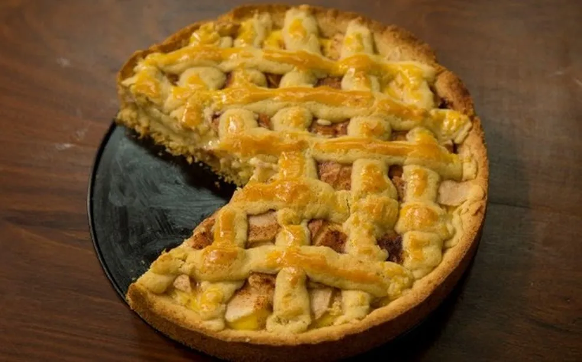
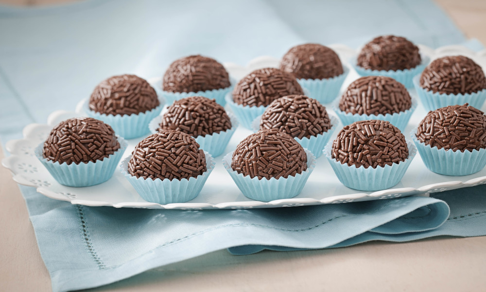
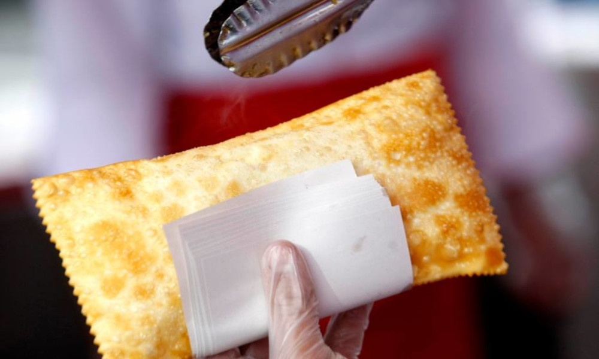
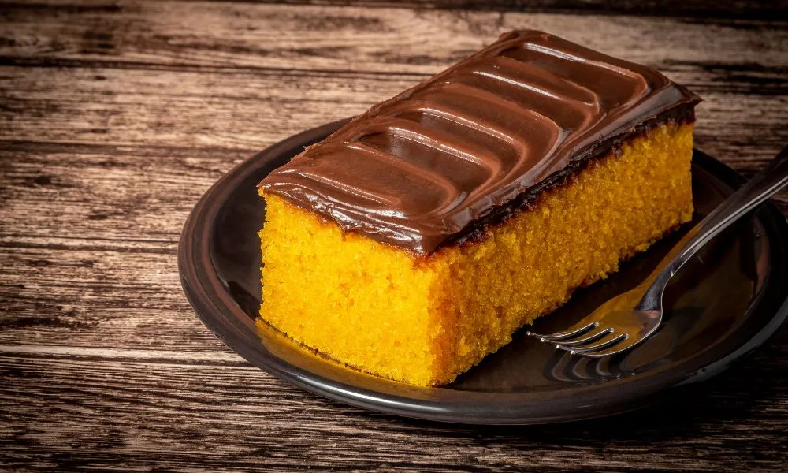
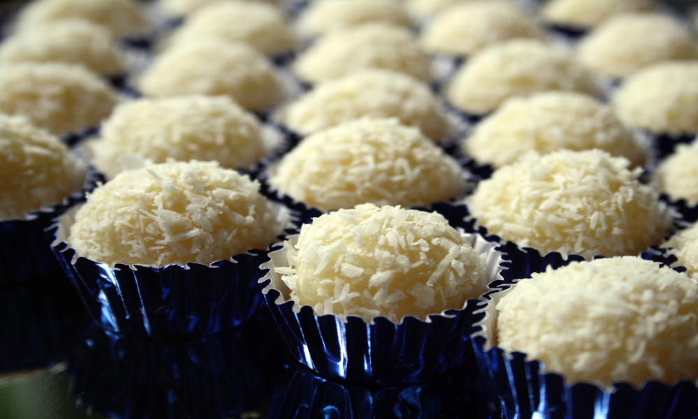

| Receitas | ||
|---|---|---|
| Salgados | Sobremesas | Doces |
| Receita de Coxinha |  Receita de Torta de Maçã |  Receita de Brigadeiro |
|  Receita de Pastel |  Receita de Bolo de Cenoura |  Receita de Beijiho |
Eu sou o Emanoel, e essa é a minha história junto com o Henrique. Tudo começou quando eu tinha 13 anos e ele 12, lá na minha cidadezinha cheia de vida. Um dia, minha mãe, dona Clara, resolveu fazer coxinhas pra vender na feira do bairro. Ela sempre teve um dom especial na cozinha, e eu e meu amigo, curioso como somos, pedimos pra ajudar. Fiquei encantado vendo a massa ganhar forma nas minhas mãos, o recheio de frango sendo colocado com cuidado e, depois, as coxinhas fritando até ficarem douradinhas. O cheiro que tomava a casa era incrível, como se fosse um abraço quentinho, e o sorriso das pessoas quando provavam aquilo? Foi aí que nós soubemos que queriamos ter uma loja de salgados um dia. Era o nosso sonho nascendo ali, entre a farinha e o fogão.